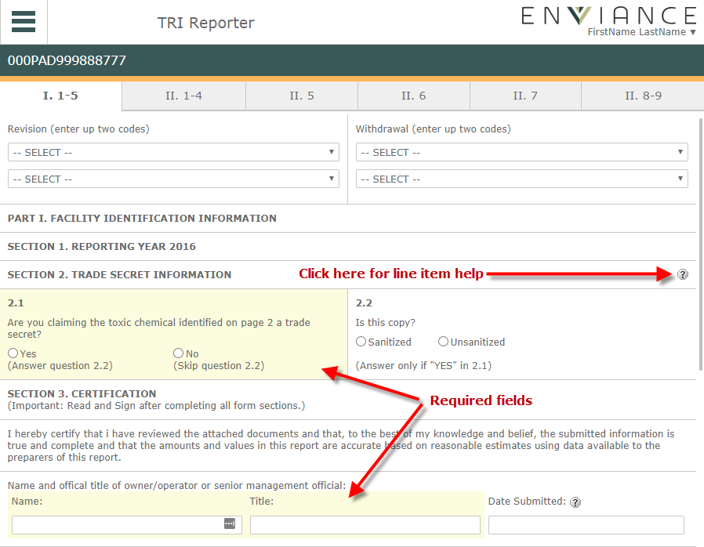

Once the FormR for a chemical has been created, the name of the chemical will be a linkto open the FormR. The status of the FormR will be In Progress until it has been completed and validated.
To create a new chemical FormR, see Managing Chemical FormRs.
To edit an in-progress FormR for a chemical:
From the Home page, select the chemical name.
To start a new FormR for a listed chemical:
Do one of the following:
Select Copy Last Year's Data to transfer data from the previous year. The FormR will open for editing with the facility information and the data transferred from last year.
The FormR opens with several tabs for the various sections. Required fields in each section are highlighted.
You can access line item help with instructions for each field by clicking the question mark for the item.

After editing fields on a tab, click the Save button at the bottom of the page to save changes.
The FormR is automatically validated for completeness of entries and appropriate type of data whenever it is saved.
A yellow bar above the tab indicates that areas within that page are either missing required data or fail validation for correct data type or values. The fields that need modification are highlighted in yellow on the tab.
A green bar above the tab indicates that the page is complete and has passed validation.
Note: A green bar does NOT mean that the data content is necessarily correct, merely that the required amount and type of data has been entered.
To return to the home page, select Home from the main menu button.